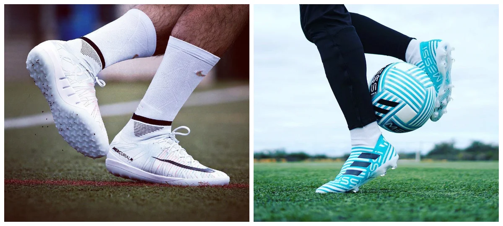
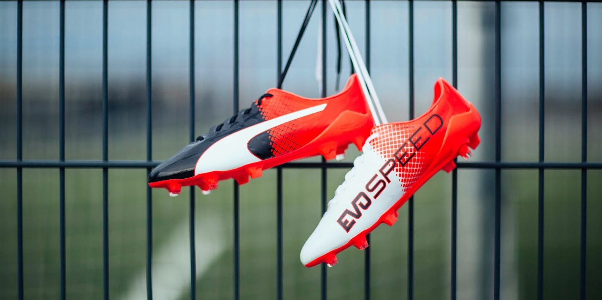
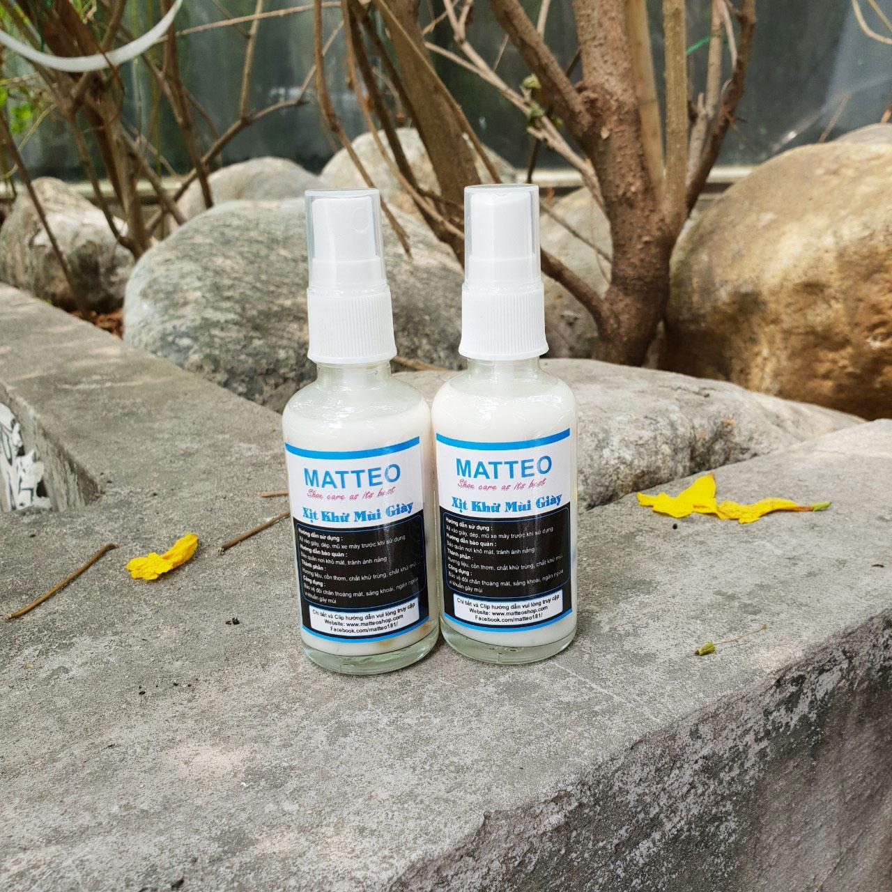
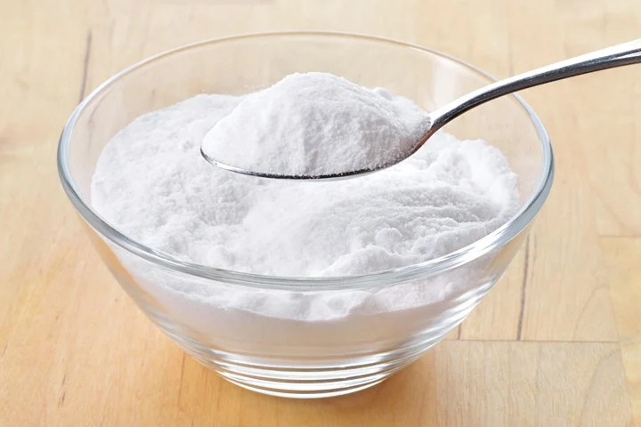

HƯỚNG DẪN BẢO QUẢN VÀ VỆ SINH GIÀY ĐÁ BÓNG CHÍNH HÃNG
Ngoài việc lựa chọn một đôi giày phù hợp
với Form chân để phát huy hết công dụng và hiệu quả,
đem lại cảm giác tốt nhất khi chơi bóng,
Độ bền của một đôi giày đá banh chính hãng còn phụ
thuộc vào cách bảo quản và sử dụng chúng.
Bài viết này sẽ giúp bạn giải đáp những thắc mắc đó.
-Bảo Quản:
Khi không sử dụng,
Giày đá banh cần được bảo quản nơi khô thoáng,
tránh những nơi ẩm thấp hoặc ánh nắng trực tiếp,
nên vệ sinh giày sạch sẽ, lấy miếng lót giày ra,
phơi nơi khô thoáng.

-LƯU Ý KHI VỆ SINH GIÀY ĐÁ BANH:
– Để ra sân luôn đẹp,
Đôi giày đá banh của bạn cần được
vệ sinh thường xuyên. Định kỳ vệ sinh giày để
tránh vết bẩn quá lâu sẽ ố, khó ra,
khi giày bẩn nên dùng vải sạch thấm nước xà
bông lau nhẹ nhàng, không dùng bàn chải để chà mạnh,
không sử dụng thuốc tẩy để giặt.
– vệ sinh bề mặt da bên ngoài,
Tránh để nước thấm vào bên trong giày,
nếu giày bị thấm nước, nên nhét giấy hút ẩm vào
trong giày để nước thấm vào trong giấy.hoặc phơi
giày nơi khô ráo ( phơi quạt hoặc nắng nhẹ ),
không phơi giày trước ánh nắng trực tiếp.

LƯU Ý:
Tuyệt đối không được ngâm giày trong nước,
xà phòng sẽ làm ẩm da và keo ép của giày.
Không được giặt giày bằng máy giặt,
không đánh giày bằng các loại xi đánh giày da,…
CÁCH KHỬ MÙI HÔI CỦA GIÀY ĐÁ BANH
Một trong những
Nguyên nhân mùi hôi xuất hiện
ở giày đá banh đó là Việc miếng lót
giày bị bẩn hoặc còn ẩm ướt sẽ là nguyên
nhân trực tiếp tạo ra mùi hôi và ẩm mốc ngay
trong đôi giày của bạn. Ngoài ra, thói quen
nhét vớ vào trong đôi giày cũng là nguyên nhân
tạo ra mùi hôi. . Để vệ sinh miếng lót giày đúng cách,
bạn cần phải ghi nhớ một số nguyên tắc cần thiết.
Bạn nên sử dụng nước ấm, cần xả thật sạch lượng
xà phòng sau khi giặt. Quan trọng nhất là,
tuyệt đối phải phơi thật khô ráo miếng lót
giày trước khi đặt lại miếng lót giày vào trong.
KHỬ MÙI HÔI TRONG GIÀY BẰNG :
Chai xịt khử mùi Matteo :
Sử dụng chai xịt khử mùi Matteo bán tại NEYMARSPORT sẽ giúp lấy đi mùi hôi khó chịu bên trong giày và giúp ngăn ngừa vi khuẩn gây mùi.

giấy báo cũ:
Sau khi cởi giày ra,
bạn nên đặt giày ở nơi thông thoáng có nhiệt độ phòng,
vò giấy báo cũ và vụn tròn lại rồi đặt vào bên trong mỗi chiếc giày.
Giấy báo hút ẩm tốt sẽ làm giày bạn mất mùi hôi.
Phấn rôm
Phấn rôm em bé
có tác dụng hút ẩm cực kỳ tốt,
lại có mùi thơm thoang thoảng.
Bạn chỉ cần dùng giấy lót cẩn thận và
rắc một ít phấn rôm lên đó. Mùi hôi sẽ biến mất.
Bột baking soda hoặc muối:
Cả hai loại này đều có khả năng hút ẩm khá tốt và sẽ giúp giày
bạn sạch sẽ và thông thoáng, mất đi mùi hôi khó chịu

CÁC BƯỚC VỆ SINH GIÀY ĐÁ BANH CHÍNH HÃNG
Giày đá banh chính hãng chỉ cần
được vệ sinh bên ngoài,
hạn chế để nước ngấm vào bên trong giày.
Không Ngâm giặt giày trong nước, máy giặt
tránh ảnh hưởng Form và chất lượng keo giày.
Khi đá bóng vào mùa mưa, giày cần được để khô hoàn
toàn mới sử dụng tiếp. Tránh sử dụng giày trong tình
trạng ẩm ướt làm ảnh hưởng đến Form và độ ôm của giày.
Các bước vệ sinh giày bóng đá chính hãng
Bước 1:
Bạn cần lau sạch sơ đôi giày trước.
Tháo dây và dùng khăn giấy,
khăn ướt để lau chùi sơ vết bẩn bám bên ngoài.
Bước 2:
Sử dụng Gel vệ sinh giày chuyên dụng có chất
tẩy vừa phải và không lẫn tạp chất làm ố giày
Bước 3:
Nhỏ 1 vài giọt gel
vệ sinh giày lên bề mặt da
hoặc hoà tan vào nước, khuấy
đều tạo bọt và dùng bàn chải sợi
mềm như bàn chải đánh răng chà lên
vết bẩn… Chỉ chà nhẹ nhàng đủ làm sạch phần vết bẩn.
Việc dùng bàn chải và chà quá mạnh có thể sẽ làm xướt phần
chất liệu giày
Bước 4:
Dùng khăn ướt thấm nước nhiều lần để lau
lại cho đến khi nào giày sạch bọt và vết bẩn.
Bước 5:
Giày đá banh cần được phơi ở nhiệt đồ phòng. Bạn không
nên phơi dưới nắng gắt hay ngoài
trời sẽ làm hư hỏng các chất liệu.
Lưu ý : Đối với những đôi giày
đá banh chất da tự nhiên bạn
nên hạn chế để nước thấm quá
nhiều vào giày vì chất da này thấm nước
sẽ rất lâu khô và về lâu dài nước sẽ làm rã form ôm chân.